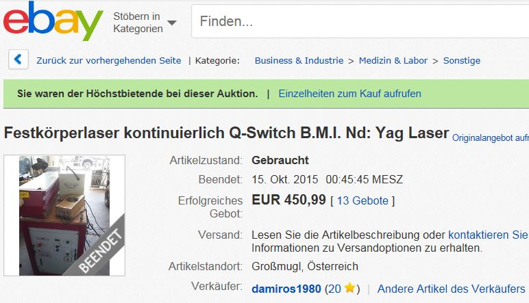
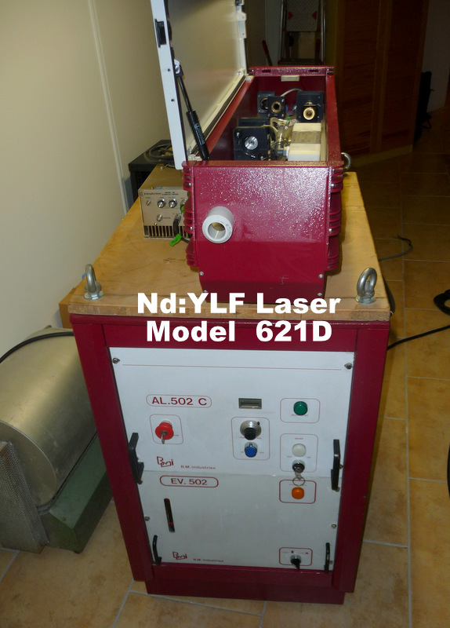
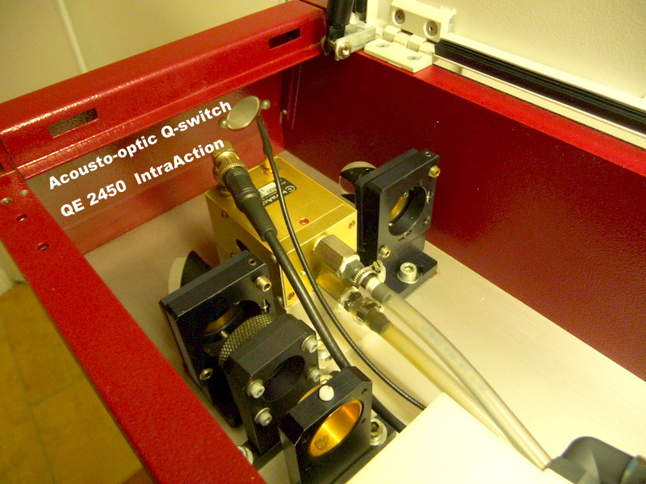
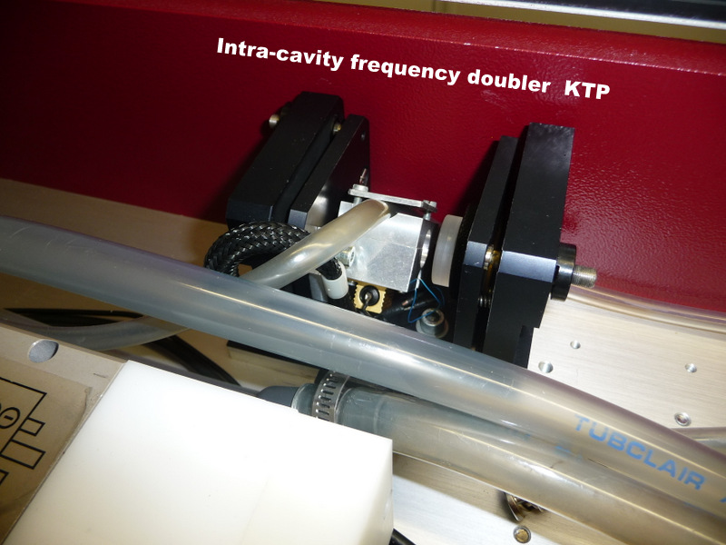
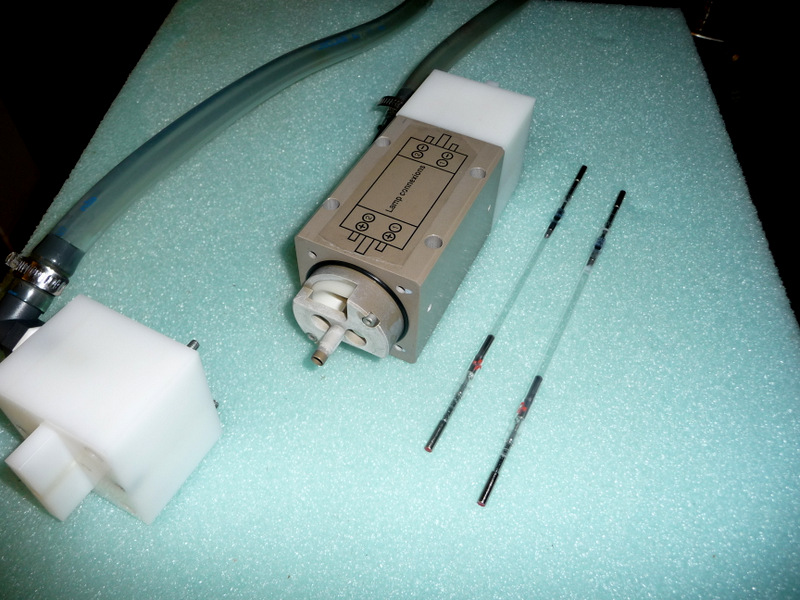
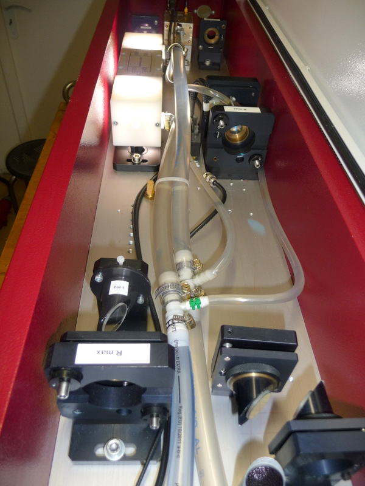
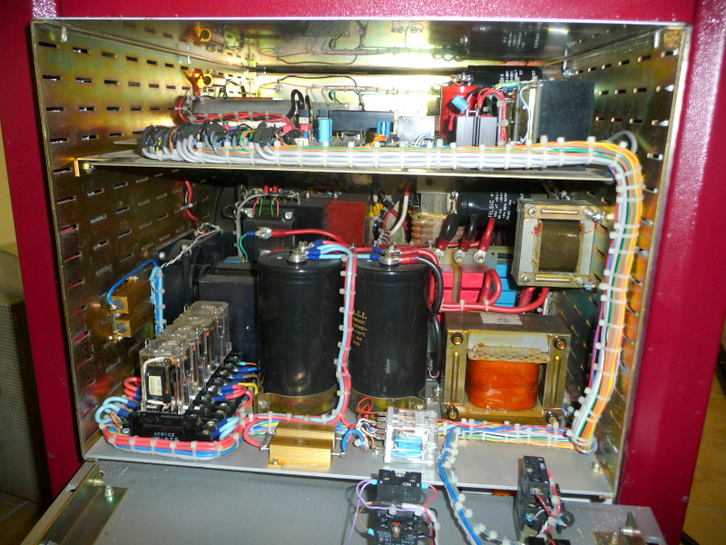
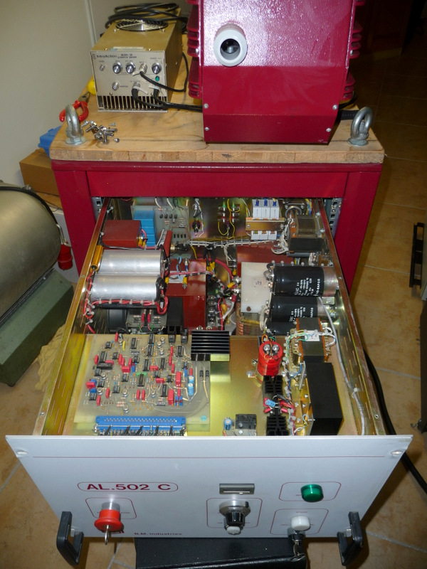
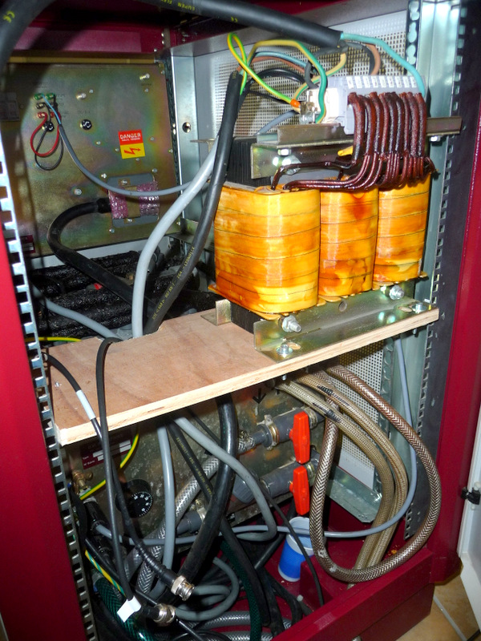

This laser was manufactured by the BMIndustries company in Every (France) in 1994 for the pumping of a femtosecond laser using a Sapphire titanium amlphase.
The BMI company was bought by THALES in 2011 and this laser was sold on Ebay for 450 euro of which I am the happy buyer!
This laser model BMI 621D emits pulses at 523nm (green). It consists of an Nd: YLF crystal pumped by 2 krypton arc tubes of 2.5 kW each.
This oscillator laser is equipped with an acousto-optic deflector for Q-switching and a temperature-stabilized KTP intracavity frequency doubler.
The repetition frequency can be adjusted between 1 and 5 kHz with a pulse duration between 200 and 500ns.
The average power at 523nm is 12W (12mJ @ 1kHz) The peak power is 43kW for 280ns

The first operation is the complete removal and the revision and repair of the laser so that it is operational which required me 4 days of work!




The Yttrium Lithium Fluoride (YLiF4) bar is birefringent. The gain and the emission wavelength depend on the polarization. The line 1047nm is formed in the plane of polarization II which is the strongest emission line and also on the plane of polarization õ which emits at 1053nm.
He can also issue at 1321 and 1313nm. The thermo-optical coefficient dn / dT produces a defocusing of the emitted beam (negative lens) that must be compensated by a positive external lens so as to obtain a parallel beam.
One of the major advantages of YLF compared to YAG in triggered mode with a repetition rate smaller than 2kHz is to obtain a pulse energy 2 times higher due to a fluorescence duration of 520 microseconds (twice as high as the YAG).
The exit patch of the YLF tends to have an eliptic shape due to its birefringence. Another disadvantage is its slight solubility in water which requires changing after 2-3 years. It is also very brittle and more sensitive to thermal shock and has a coefficient of thermal expansion 5 times greater than the YAG!
In this laser having an intracavity frequency doubler it is necessary that the plane of polarization II is directed in the same plane as the axis of the crystal doubler




Video in HD
The next step is to set the resonator first in continuous mode (cw) with intracavity frequency doubling and then in a second phase in q-switching mode using the IntraAction QE-2450 acousto-optic deflector.